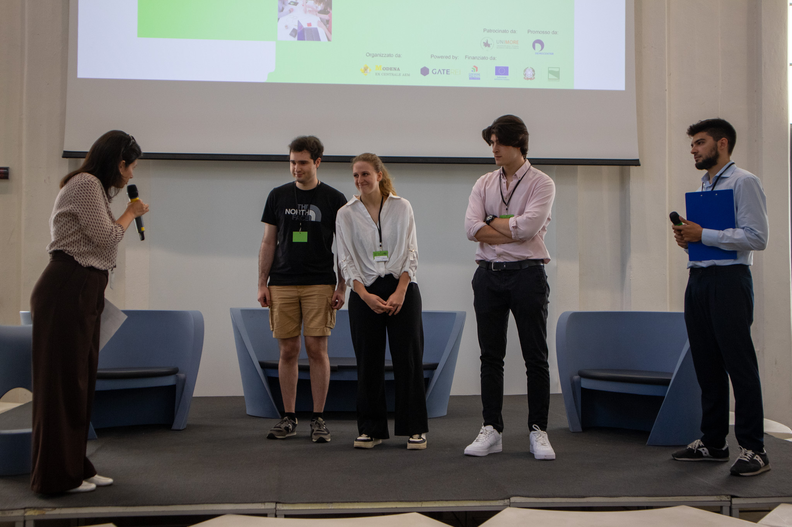
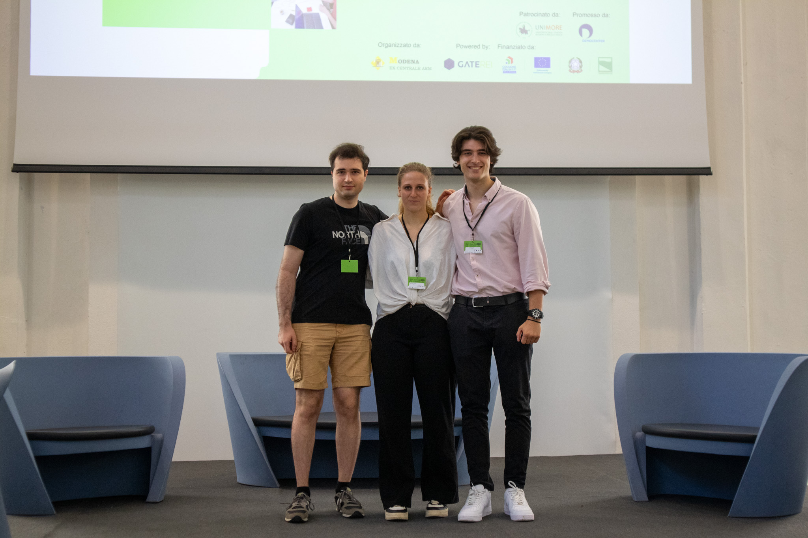

Il nostro viaggio è iniziato a Modena
dove nell'aprile 2025 abbiamo partecipato allo Startup Creation Lab. Nonostante fossimo ancora nelle prime fasi del progetto, siamo riusciti a ottenere il primo posto.
Da quel momento, il nostro team ha lavorato intensamente per trasformare l'idea di Zeno in realtà.